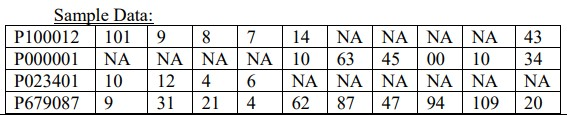

Simulator For Selection
Problem Statement
- Team management wants to pick the top 6 batsmen for the next game.
- Team management has data of all of their available 11 batsman details.
- Help the team management to select the best 6 batsmen (need to make a strategy for selecting the top 6 players).
- The format of all the data is shown below.

- The first column is showing the playerID, Remaining 10 columns are having data of run scored by a player in 10 innings.
- If a player is not selected in playing 11, then NA is mentioned. PlayerID must be described format.
- Generate all the data randomly.
Steps for running simulation
- Click on show files
- Now select main.py to view the code.
- And then select run button in the top right corner.
- You can alternatively select 'Open in Replit' option to run the code there.